Jedan sat pravljenja nečega u Minecraft-u i jedan sat beskonačnog skrolovanja nisu ista stvar. Većina saveta roditeljima govori samo o količini vremena. Ovaj vodič je o onome što je zapravo važno — o kvalitetu onoga što dete radi na ekranu, i o tome kako da to jednostavno urediš.
Da bude jasno odmah: cilj nije da oduzmeš detetu telefon ni da ga špijuniraš. Cilj je da ti biraš šta i koliko — a sve ostalo mirno pustiš. Nekoliko dosadnih podešavanja, jednom, i najveći deo brige nestane.
Instaliraj Family Link i poveži dečji telefon (deo „Telefon", koraci 1–3).
Uključi odobravanje kupovina i šifru za svaku kupovinu (deo „Novac").
Postavi jedan realan dnevni limit i vreme za spavanje (deo „Telefon", korak 4).
Ostalo doteruj kasnije, u miru. Ova tri koraka pokrivaju najveći deo zaštite — vreme, potrošnju i osnovnu strukturu.
Deo 01
Telefon pod tvojom kontrolom
Svaki Android telefon već ima ugrađene alate kojima biraš koliko telefon radi, koje se aplikacije instaliraju i koliko traje svaka pojedinačno. Većina roditelja i ne zna da postoje.
Jedan alat rešava skoro sve
Google Family Link
Besplatna Google aplikacija koju instaliraš na svoj telefon. Preko nje sa svog telefona upravljaš dečjim: vidiš koliko se koja aplikacija koristi, postavljaš vreme, odobravaš instalacije i kupovine, i zaključavaš telefon kad treba. Dete ne mora ništa da podešava.
Pre nego što počneš
Tvoj telefon sa tvojim Google (Gmail) nalogom — na njega ide upravljanje.
Dečji Android telefon pri ruci — najbolje da je dete pored tebe.
Oko 20 minuta mira. Ne mora sve odjednom.
Ako dete već ima nalog i telefon, ne praviš novo — samo dodaješ nadzor na postojeći.
Sedam koraka
Prva tri su „instalacija", ostala četiri su podešavanja koja od tada radiš kad god poželiš — sa svog telefona.
1
Postavi Family Link na svoj telefon
Dobijaš komandnu tablu na svom telefonu.
U Play prodavnici potraži „Family Link" i instaliraj je. Prijavi se svojim Google nalogom, izaberi da si roditelj i napravi porodičnu grupu.
2
Napravi (ili poveži) dečji nalog
Dete dobija nalog koji ti nadgledaš.
U Family Link-u dodaj dete. Nema nalog → „Napravi nalog za dete". Već ima Gmail → „Dodaj nadzor" na postojeći.
Google traži tvoju saglasnost i simboličnu proveru kartice — ne naplaćuje se. Za decu mlađu od 13 nalog mora biti pod nadzorom.
3
Poveži dečji telefon
Telefon i nalog su spojeni s tvojom kontrolom.
Na dečjem telefonu prijavi se dečjim nalogom (Podešavanja → Nalozi, ili pri prvom paljenju). Potvrdi nadzor sa svog telefona. Ostani uz dete dok se povezuje.
4
Podesi vreme
Telefon radi onoliko koliko ti kažeš — i sam se smiruje uveče.
Izaberi dete ›Screen time (Vreme ispred ekrana)
Dnevni limit — koliko sati dnevno; može različito radnim danom i vikendom.
Downtime / Spavanje — telefon se sam zaključa (npr. 21h–7h).
School Time / Škola — tokom časova samo osnovne aplikacije.
Bonus vreme — izuzetak bez menjanja stalnih pravila.
Savet: počni realno, ne drakonski — pravila koja prate ritam porodice se lakše poštuju.
5
Ovo skoro niko ne zna da postoji
Ograniči svaku aplikaciju posebno
Ne „koliko telefona", nego „koliko čega".
Screen time›Time limits›App limits
Limit po aplikaciji — npr. TikTok 30 min, igra 1h.
Blokiraj aplikaciju — nestane dok je ti ne vratiš.
„Neograničeno vreme" za korisne (čitanje, škola) — ne troše dnevni limit.
Važno: sistemske aplikacije (Telefon, Poruke, Google) ne mogu da se ograniče — i to je u redu.
6
Najvažnije jedno dugme
Odobravanje instalacija i kupovina
Ništa se ne instalira ni ne plaća bez tvog „da".
Dete ›Controls›Google Play›Purchase approval
Od tada svako preuzimanje i svaka kupovina — uključujući kupovine unutar igara (loot box, V-Bucks, gemovi) — traži tvoje odobrenje.
Onaj jedan dosadan potez koji skida najveći deo rizika od potrošnje — bez ijedne svađe.
7
Podesi sadržaj
Ono što stiže do deteta odgovara uzrastu.
Play prodavnica — ograniči po uzrasnoj oznaci (o tome deo „PEGI").
YouTube — nadzirani režim ili YouTube Kids.
Pretraga — SafeSearch uključen.
Kontakti (noviji Android) — odobravaj s kim se dete dopisuje.
Šta Family Link ne može
Da ne bi imao lažan osećaj sigurnosti — jer to je gore od nikakvog.
Ne čini internet bezbednim sam po sebi.Alat je, ne zamena za razgovor. Najbolja zaštita je što dete ume da ti kaže kad naiđe na nešto čudno — bez straha da će mu telefon biti oduzet.
Bistra deca umeju da ga zaobiđu.Npr. Samsung „Bezbedni folder" može sakriti aplikacije — zaključaj ga svojim PIN-om. „Pristupačnost" trikove ograniči u Controls.
Prestaje kad dete odraste.Kad napuni 13, dete može samo da preuzme svoj nalog. Do tada si izgradio naviku i poverenje — to je jedini alat koji tada ostaje.
Deo 02
PEGI oznake: šta znače — a šta ne
PEGI je oznaka koju vidiš na svakoj igri. Kaže ti za koji je uzrast primerena — ali ne kaže da li je igra dobra za tvoje dete. To su dve različite stvari, i baš tu većina roditelja pogreši.
Najvažnija stvar u ovom delu
PEGI meri primerenost, ne vrednost
Na šta PEGI odgovara
„Ima li ovde nasilja, straha, psovki, seksa, kockanja, kupovina ili ćaskanja — i koliko?" Dakle: primerenost sadržaja uzrastu.
Na šta PEGI NE odgovara
„Je li ova igra dobra za moje dete? Da li nešto razvija, ili je prazna?" To PEGI ne meri — čak ni ne gleda težinu igre.
Zato: igra sa oznakom 3 može biti potpuno prazna, a igra sa oznakom 12 može biti odlična za dete. Koristi PEGI da odsečeš neprimereno — a za „dobro ili loše" gledaj deo o igrama i svoju procenu.
Pet oznaka uzrasta
Zelena je bezbrižna, žuta traži pažnju, crvena je za odrasle.
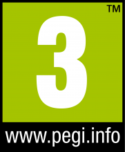
Primereno svima
Bez zastrašujućeg sadržaja. Najviše vrlo blago, crtano „nasilje".
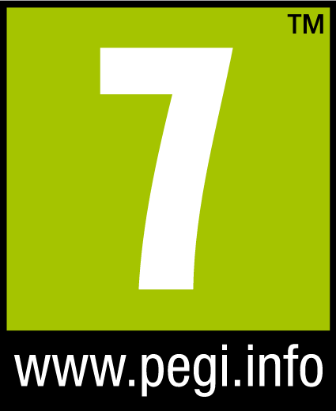
Od 7 godina
Kao 3, ali može imati prizore ili zvuke koji uplaše najmlađe, ili blago nerealno nasilje.
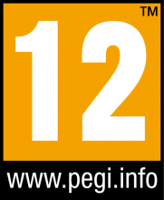
Od 12 godina
Nasilje u fantazijskom svetu ili prema likovima nalik ljudima, blage psovke i nagoveštaji.
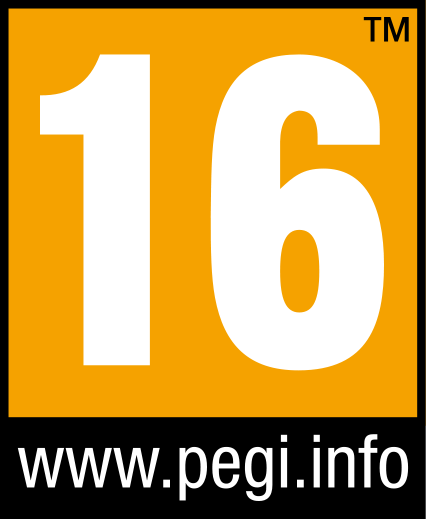
Od 16 godina
Realističnije nasilje, jače psovke, nagoveštaji seksa, prikaz droge/alkohola/duvana.
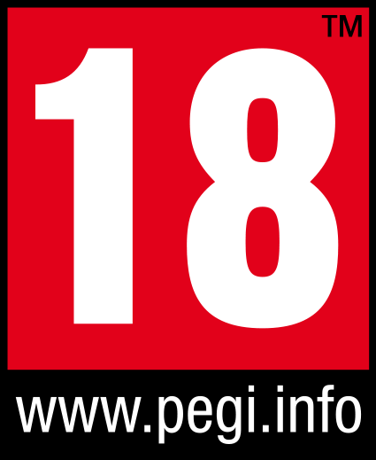
Samo za odrasle
Gruba nasilja, eksplicitan seks, glorifikacija droge, simulacija kockanja.
Zapamti: PEGI gleda samo sadržaj — ne koliko je igra teška ni koliko veštine traži. Zato lak i prazan naslov i zahtevna, vredna igra mogu nositi istu oznaku.
Male ikonice — često korisnije od broja
Pored broja stoje ikonice koje kažu zašto je igra tako ocenjena.
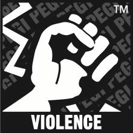
Nasilje (Violence)
Od crtanog pada do realističnih prizora.
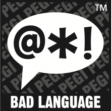
Ružan jezik (Bad Language)
Psovke — blage (12) ili jake (16, 18).
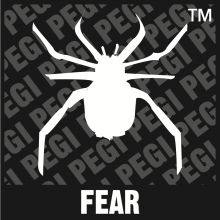
Strah / Horor (Fear / Horror)
Prizori ili zvuci koji plaše mlađu decu.
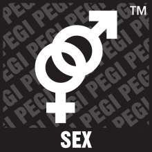
Seks (Sex)
Od nagoveštaja (12) do eksplicitnog (18).
Droga (Drugs)
Droga, alkohol, duvan — uvek 16 ili 18.
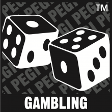
Kockanje (Gambling)
Elementi ili simulacija kockanja.
Diskriminacija (Discrimination)
Diskriminatorni jezik ili prikazi.
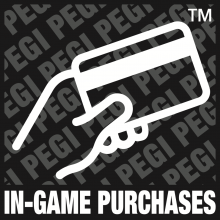
Kupovine u igri (In-Game Purchases)
Mikrotransakcije, valuta, „iznenađenja", pa i plaćanje da se uklone reklame.
Praktičan savet: ako vidiš ikonice „Kupovine u igri" ili „Kockanje" — to je znak da uključiš pravila iz dela o novcu.
Novo od juna 2026.
PEGI je pooštrio pravila oko novca i ćaskanja
Ranije su kupovine i loot box-ovi bili samo sitna ikonica koja nije dizala broj. Za nove igre, od juna 2026, te stvari sada dižu i samu oznaku:
Loot box i plaćene nasumične stavke → najmanje PEGI 16 („social casino" → 18).
Vremenski/količinski ograničene ponude → najmanje PEGI 12.
NFT / kripto mehanike → automatski PEGI 18.
Mehanike koje te mame da se vraćaš (dnevni zadaci, nizovi) → najmanje PEGI 7.
Ćaskanje i komunikacija → nova kategorija rizika u oceni.
Ali pazi na starije igre
Igre ocenjene pre juna 2026. se ne ocenjuju ponovo. Popularan stariji naslov može i dalje nositi PEGI 12 a imati pun loot box sistem. Zato kod poznatih starijih igara gledaj i ikonice, ne samo broj.
Kako to izgleda u Srbiji
U Srbiji Play prodavnica prikazuje baš PEGI oznake — kroz IARC sistem, gde jedan upitnik napravi PEGI za Evropu, ESRB za Ameriku, itd.
Ista igra može imati različitu oznaku u različitim zemljama — za tebe važi PEGI.
Gde da je vidiš: na stranici igre u Play prodavnici, ispod imena; niže piše i „zašto".
Alat: besplatna PEGI aplikacija i sajt pegi.info — dostupno i na srpskom.
Deo 03
Popularne igre: šta razvijaju, na šta da paziš
Pošten pregled devet najpopularnijih — poređane od onih koje traže najmanje pažnje ka onima koje traže najviše.
Prvo — tri različite vrste opreza
„Loše" nije jedna stvar
Najčešća greška je trpati sve u istu korpu „štetno". Ali igra može biti problematična na tri sasvim različita načina — i za svaki se drugačije reaguje.
Bezbednost
Nepoznati ljudi i ćaskanje. Najveći rizik. Reaguje se podešavanjem naloga i razgovorom.
Novac
Kupovine i nasumične nagrade. Reaguje se odobravanjem kupovina.
Prazno vreme
Igre bez kraja ili poplava reklama. Reaguje se limitom vremena po aplikaciji.
Boja leve ivice kartice pokazuje koliko pažnje igra traži:
malo — može mirno umereno — podesi pre igranja mnogo — obavezno podesi nalog
Kupovine i nasumične nagrade označene su na dnu svake kartice — samo kao činjenica. Detaljnije o njima u delu „Novac u igrama".
Geometry Dash
Ritam-platformer · jedan igrač
Prelaziš teške nivoe u ritmu muzike — umireš mnogo puta dok ne savladaš obrazac.
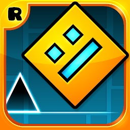
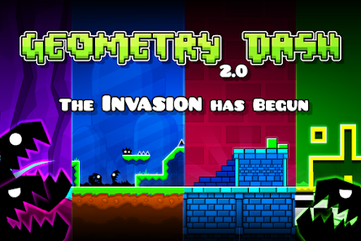
Praktično bez rizika
Šta razvija
Upornost i toleranciju na neuspeh.
Preciznost, tajming i pamćenje obrazaca.
Osećaj za ritam; editor nivoa uči dizajn.
Na šta paziti
Ume da bude frustrirajuće do besa — deo poente.
Korisnički nivoi mogu imati poneko neprimereno ime, ali nema kontakta sa strancima.
UzrastPEGI 3KupovineMinimalneNasumične nagradeNe
Fall Guys
Zabavna trka-prepreke · do 60 igrača
Šašavi likovi trče kroz prepreke i ispadaju rundu po rundu dok ne ostane pobednik.
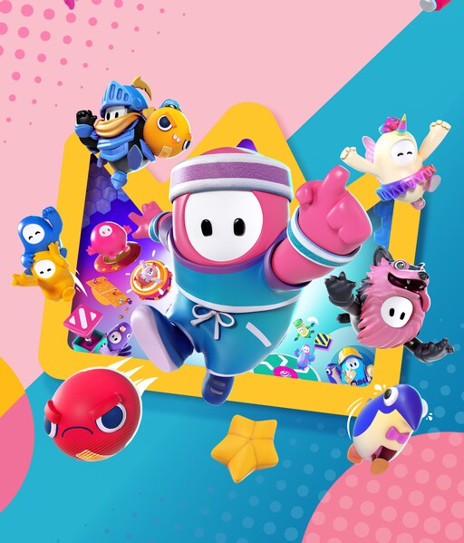
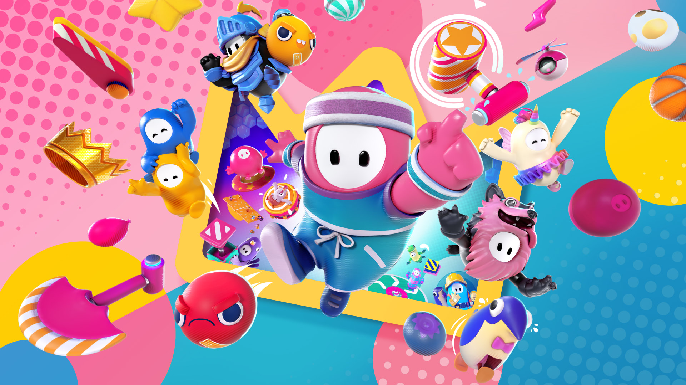
Blag rizikKozmetika
Šta razvija
Koordinaciju i brze reakcije.
Sportski duh — poraz je smešan i blag.
Timske runde uče saradnju; potpuno nenasilno.
Na šta paziti
Kozmetička prodavnica i sezonska propusnica — pritisak da se troši, ali samo izgled.
Online, ali skoro bez ćaskanja sa strancima — velik plus.
Odlična za strateško razmišljanje — ali od svih na spisku najagresivnija po pitanju trošenja.
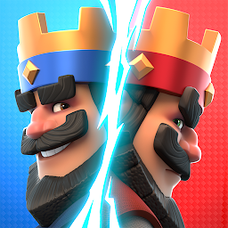
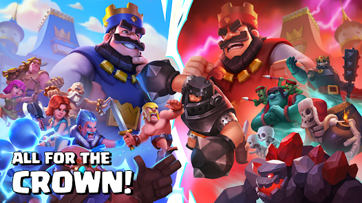
Najviše trošiRang-lista, frustracija
Šta razvija
Strateško razmišljanje i planiranje.
Upravljanje eliksirom i pravljenje špila.
Prilagođavanje, tajming, strpljenje. Ćaskanje ograničeno na gotove poruke.
Na šta paziti
Nadograđivanje karata je „plati da napreduješ".
Nasumični sanduci; „Evolutions" doživljen kao pay-to-win.
Rang-lista protiv stranaca donosi frustraciju.
UzrastPEGI 7KupovineDa — snažno utičuNasumične nagradeDa — sanduci
Roblox
Platforma sa milionima igara koje prave korisnici
Najveći kreativni potencijal na spisku i najviše rizika — traži da se nalog obavezno podesi.
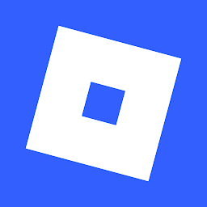
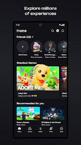
Kontakt sa nepoznatim odraslimaRobux — laka potrošnja
Šta razvija
Dete može i da pravi i programira igre (Lua).
Ogromna raznovrsnost sadržaja.
Druženje sa drugarima; neke igre su edukativne.
Na šta paziti
Otvorena platforma + ćaskanje → neprimeren sadržaj i kontakt sa nepoznatima.
Robux omogućava prekomernu potrošnju; neke igre imaju kockarske mehanike.
Uz dečji nalog (Kids/Select) i limite — mnogo bezbednije.
UzrastPEGI · uz nadzorKupovineDa — RobuxNasumične nagradePonegde
Deo 04
Novac u igrama: kako zarađuju na deci
Skoro svaka besplatna igra mora nekako da zaradi. Načina ima tri, i jedan roditelji gotovo uvek previde. Dobra vest: nekoliko dosadnih pravila skida najveći deo rizika.
Pre svega ostalog
Tri pravila koja se ne pregovaraju
Ako ne uradiš ništa drugo, uradi ovo troje. Zajedno neutrališu skoro svu nekontrolisanu potrošnju.
Kartica nije detetu dostupna (access to payment methods)
Podaci o kreditnoj kartici se ne čuvaju na dečjem telefonu i ne dele se sa detetom. Način plaćanja drži roditelj — osnovno pravilo pristupa kartici i kupovini preko interneta.
Šifra za svaku kupovinu — uvek (require authentication for all purchases)
U Google Play prodavnici postavi da se lozinka traži za baš svaku kupovinu. Bez toga dete može samo da kupuje stvari preko interneta.
Unesi tačne godine deteta (correct age)
Sve prodavnice i igre imaju stroga ograničenja pristupa kupovinama i šopovima — ali se pale samo ako je unet stvarni uzrast. Ako se dete lažno predstavi kao odraslo, sva zaštita nestane odjednom.
Tri oblika monetizacije
Idu od najlakšeg za kontrolu ka najpodmuklijem.
01
Kupovine unutar aplikacije
In-App Purchases (IAP) · mikrotransakcije
Dete direktno kupuje nešto: izgled lika (skin), premijum valutu (V-Bucks, Robux, gemovi), ili prednost (pay-to-win). Cena je vidljiva, ishod poznat.
Najlakše se kontroliše. Pravila 1 i 2 ga praktično reše: kad svaka kupovina traži šifru, dete ne može samo ništa da kupi.
Ovo nije bezazleno. Od sva tri oblika, ovaj je najpodmukliji — baš zato što je nevidljiv i ne stoji ni na jednom računu.
„Besplatno" nije besplatno.Ako ne plaćaš proizvod — proizvod je tvoje dete. Prodaje se njegova pažnja, vreme i podaci.
Cilj igre je suprotan dobru deteta.Igra zarađuje što više prekida i što duže gledanja, pa je namerno pravljena da prekida, mami i vraća. Dizajn radi protiv deteta.
„Nagrađene reklame" dresiraju dete.Pogledaj reklamu → dobij nagradu. Mali uslovni krug koji usađuje: reklama = nagrada.
Reklame su levak ka daljem trošenju.Reklamiraju druge, agresivnije igre — pa i aplikacije sa kockarskim mehanikama — koje zaobilaze uzrasnu oznaku same igre.
Skupljaju se podaci o detetu.Profilisanje maloletnika radi ciljanja reklama.
Sadržaj reklama niko ne bira umesto tebe.Može biti neprimeren, uznemirujuć ili prevara.
Šta da radiš: plaćena verzija bez reklama (ad-free) je često najjeftinija zaštita koju ćeš kupiti — jednom platiš par evra i ukloniš ceo ovaj mehanizam.
03
Nasumične nagrade
Random rewards · loot box · gacha · sanduci, dropovi
Platiš — pravim novcem ili valutom iz igre — i dobiješ nasumičan sadržaj. Ne znaš unapred šta ćeš izvući.
Zašto privlače decu
Isto ono iznenađenje kao Kinder jaje ili kesica sa sličicama. Deca oduvek vole iznenađenje i skupljanje — to nije poremećaj. Zato loot box detetu deluje primamljivo i poznato.
Druga strana
Ali i Kinder jaje, i sličice, i loot box mogu da liče na kocku. Struktura je ista: platiš pravi novac za nasumičan ishod nejednake vrednosti, uz jurnjavu i „umalo".
Jedina stvar koja ih drži van prave kocke: nema isplate — uvek dobiješ nešto i ne možeš da unovčiš dobitak. Zato nije bauk. Ali jeste razlog za onaj jedan potez: šifra i odobravanje. Pitanje nije „je li kocka" (sve je pomalo) — nego koliko je agresivno i ima li ventil.
Sve tri se drže pod kontrolom sa tri stvari
Tačne godine deteta— pale ugrađena ograničenja prodavnica i igara.
Šifra za svaku kupovinu— ništa se ne plaća bez tebe.
Odobravanje kupovina u Family Link-u— svako preuzimanje i kupovina traži tvoje „da" (deo „Telefon").